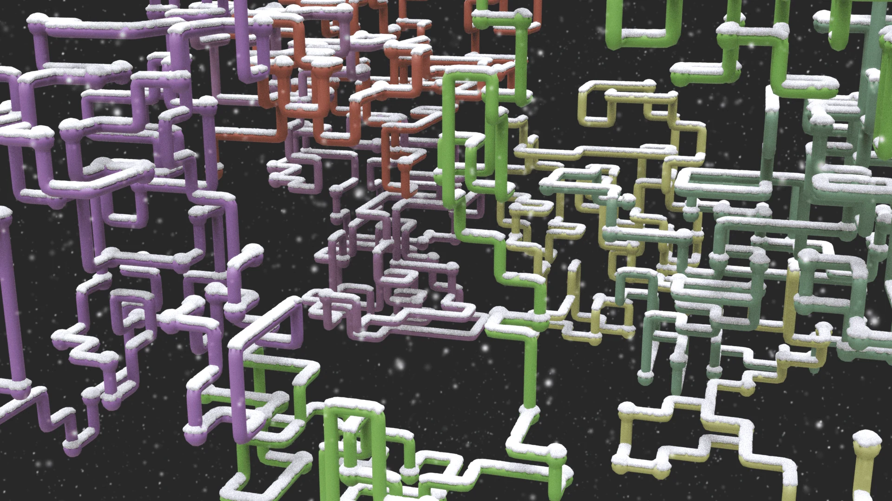
For this project, I set out to recreate the classic Microsoft Windows 3D Pipes screensaver that captivated so many of us in the 1990s. Studying footage of the original screensaver, I mapped out the foundational rules governing pipe generation:
- Pipes initialize from a single spherical joint and a starter segment. Each frame, a pipe extends by exactly one segment.
- Starting positions, hues, directional paths, and camera tumble are randomized.
- Pipes must never collide or intersect with themselves or other existing pipes.
- Pipes are confined within a visible three-dimensional boundary volume.
My first attempt utilized an L-system with turtle commands: each iteration stepped forward with equal probability of continuing straight or banking along cardinal axes. However, this came with two critical roadblocks: the grammar had no spatial memory to detect impending self-intersections, and constraining growth strictly within a volumetric bounding box proved difficult.
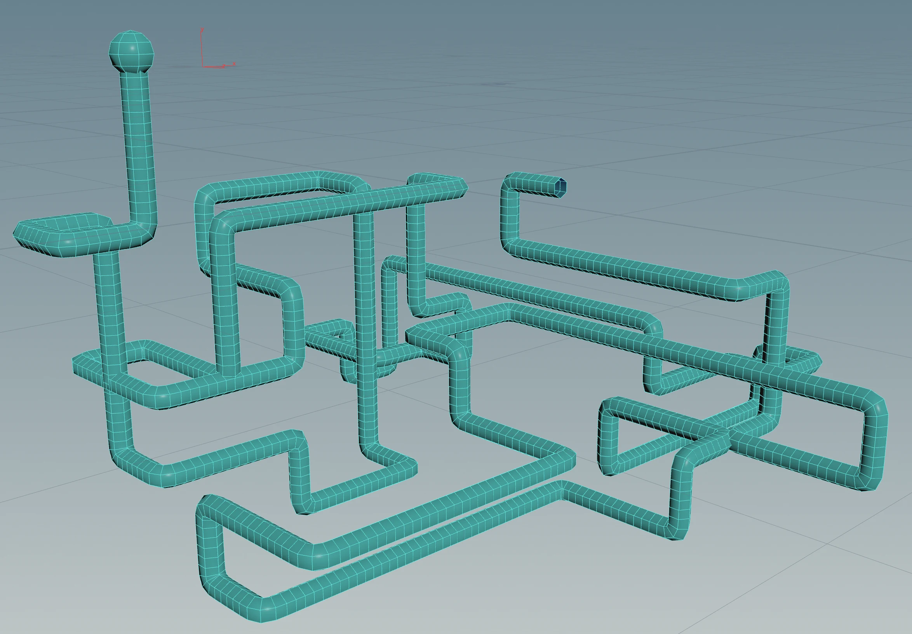
The VEX Point Array System
I rearchitected the generator using a VEX point-array system, leveraging Python to handle scene seeds and high-level attributes. In this setup, each pipe claims an unoccupied grid node and queries adjacent coordinate neighbors before choosing its next step:
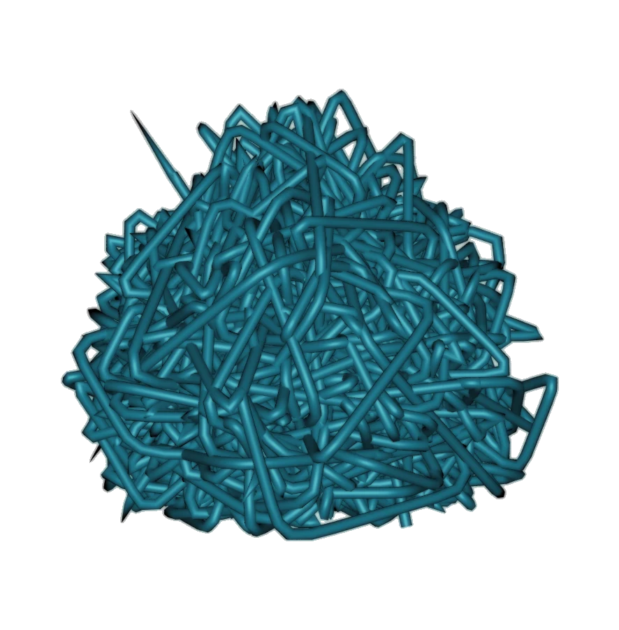
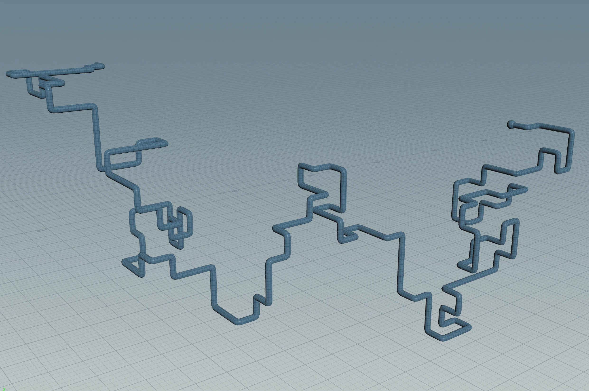
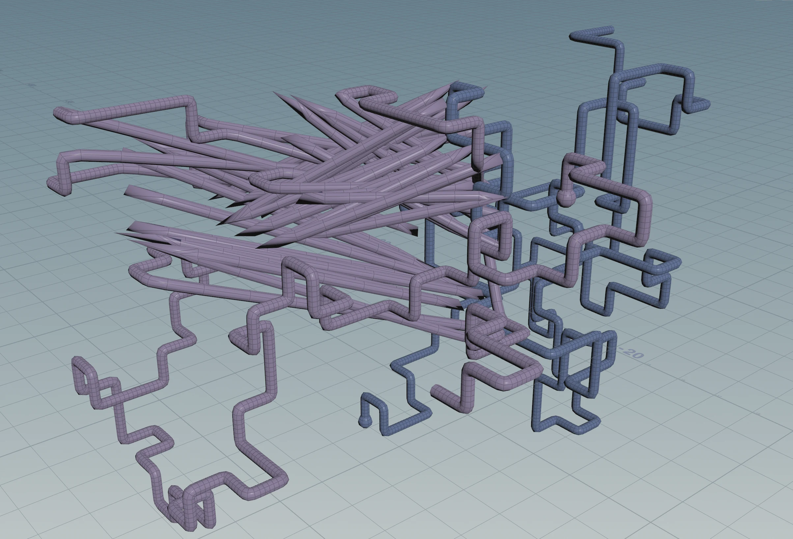
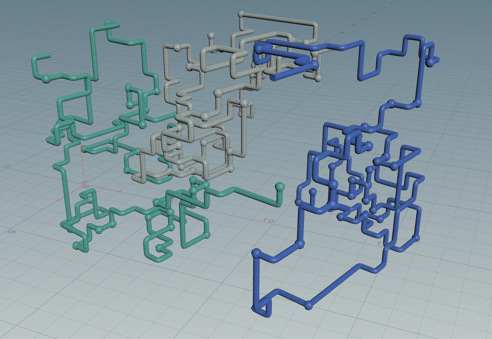
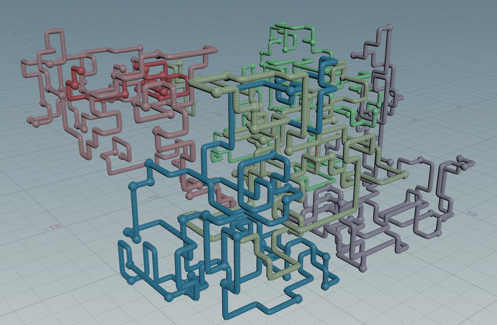
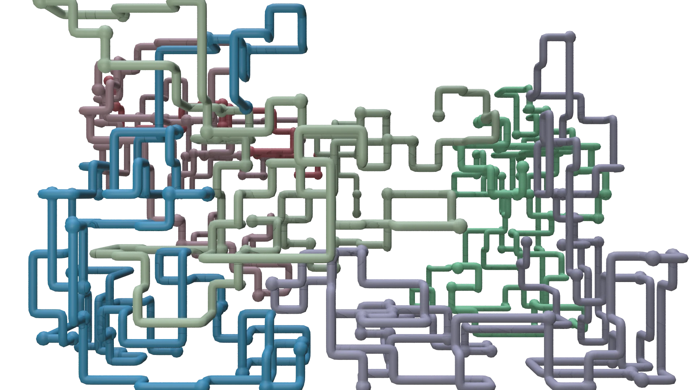
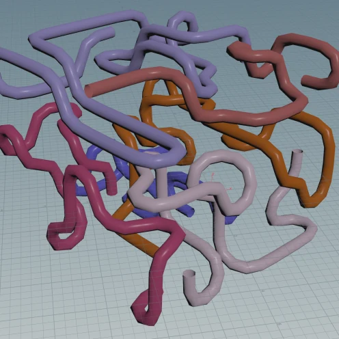
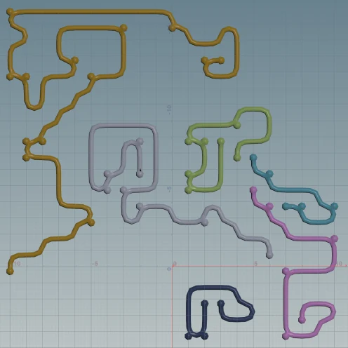
Scaling to Arbitrary Pipe Counts
In my original prototype, I used a Foreach loop iterating over six distinct VEX scripts per frame. This approach was computationally heavy and fundamentally hardcoded to a maximum of six pipes. Decreasing pipe counts simply deleted pipes post-simulation rather than dynamically redistributing spatial paths.
Researching solver optimization led me to Entagma's excellent post on VEX space-filling curves. Inspired by their workflow, I transitioned from duplicating static 3D point grids to dynamically sourcing seed points from VDB volumes, then running the simulation inside a native Solver SOP.
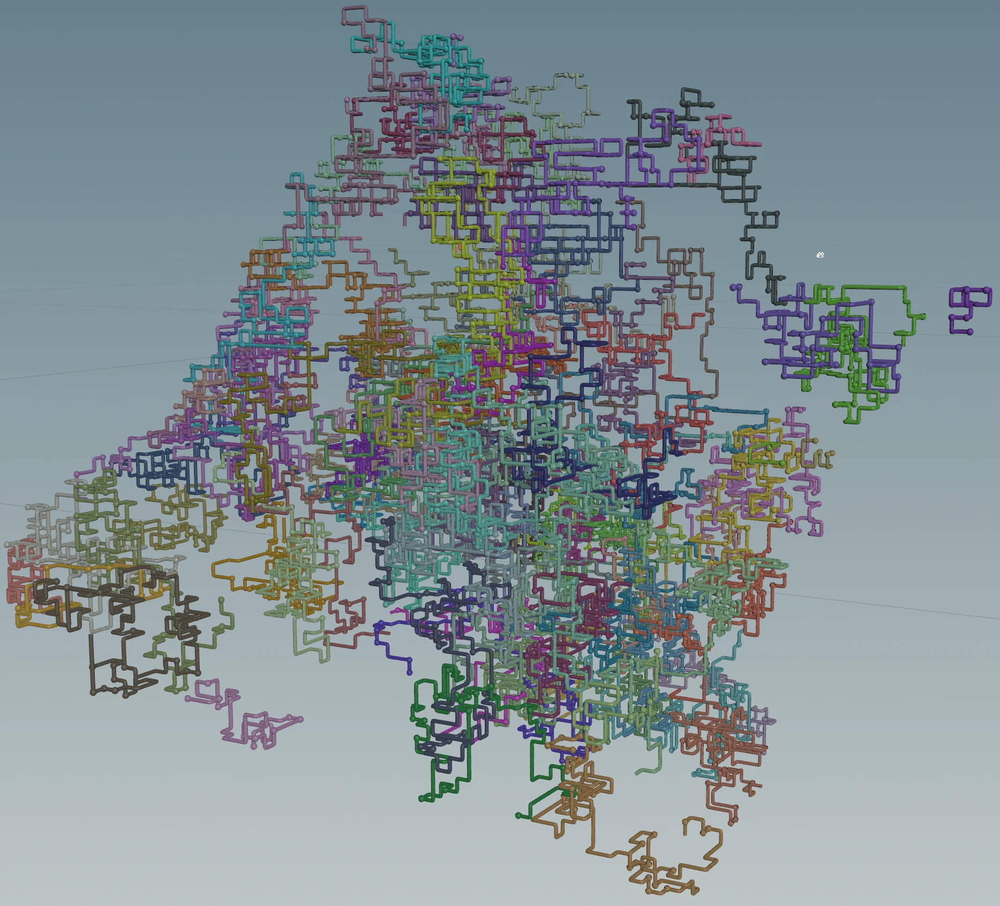
Within the solver, each pipe receives an integer identifier (@pipe_n) and calculates unique pseudo-random seed colors. To prevent race conditions where two pipes claim the exact same open coordinate on the same frame, an inner Foreach loop evaluates each pipe sequentially per sub-step. Points are flagged as occupied immediately as a segment is committed, guaranteeing that two pipes can never intersect—even when running dozens of concurrent paths.